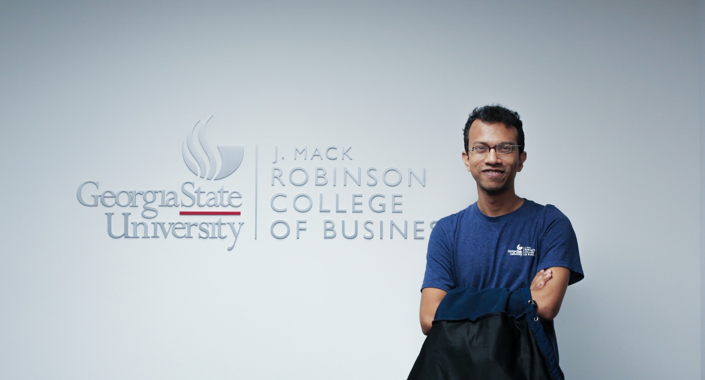

Applied AI for Construction Intelligence
I am Kamrul, an engineer turned AI researcher applying Vision-Language Models and video intelligence to transform how construction sites see, learn, and stay safe.

Engineer. Researcher.
Lifelong Learner.
I started as a civil engineer in Bangladesh, built foundations in geotechnics, pivoted through finance, returned to data science, and now find myself at Purdue doing what I always wanted, building AI systems that matter in the real world.
My research lives at the intersection of Vision-Language Models (VLMs), video understanding, and construction management, using AI to automatically detect safety hazards, track project progress, and give construction sites something they have never had: a brain.
I am a member of the Wii Lab (Worker-centric Intelligent Infrastructure) under Dr. Heung Jin Oh at Purdue Polytechnic. The lab's S2-WIDE mission, smart, sustainable, worker-centered construction intelligence, aligns with my work on VLMs for site automation.
Explore my research →Professional Journey
-
2024 - Present
Engineer · GEOCAL LLC, Oklahoma City
-
2024 - Present
Data Science Intern · SIMPLISOLVE LLC, Dallas
-
2022 - 2023
Lecturer, Mathematics · BRAC University, Dhaka
-
2020 - 2023
Assistant Manager, 5G Projects · Teletalk Bangladesh
Academic Journey
-
2026 - Present
PhD in Technology · Purdue University, Bowen School of Construction
-
2023 - 2024
MS, Computer Information Systems · Georgia State University, GPA 3.93
-
2020 - 2022
MBA, Finance · IBA, University of Dhaka
-
2009 - 2017
BSc, Civil Engineering (Geotechnical) · BUET
From Bangladesh
to Purdue
Teaching has been a constant thread - from free video lectures for remote students in Bangladesh on Onnorokom Pathshala, to undergraduate mathematics at BRAC University, to guest lectures at SUST.
- BRAC University - Lecturer, Mathematics & Natural Sciences
- Udvash - Mathematics instructor (parallel school, Dhaka)
- Onnorokom Pathshala - Free YouTube lectures for remote learners in Bangladesh
- SUST (SWE Dept.) - Guest lectures, Software Engineering
Thoughts on AI,
Life & Everything
I write about AI history, technical walkthroughs, and occasionally about concerts and the contradictions of the modern world. No filter, just honesty.
Read all posts →
Let's Talk Research,
Ideas, or Collaboration.
I'm open to research collaborations, academic discussions, and connecting with people working on AI, construction tech, or anything curious. PhD inquiries, project ideas - all welcome.
kamrul28890@gmail.com